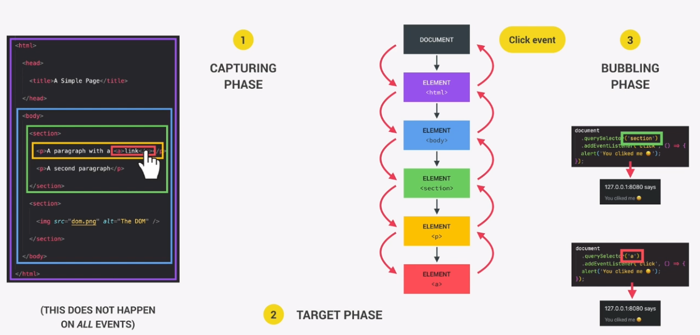

Event Propagation lets you have a single element capture all the events of its children elements. Event propagation is the reason you want to use the newer addEventListener model.
Load the page and click an image.
View the console output. NOTE: The 'MouseEvent' event does NOT show in Firefox. It only shows in Chrome.
Notice inside the 'MouseEvent', there is a 'toElement: img' item (chrome only).
Scroll down to the toElement item.
Open it and you'll see the list elemtn you clicked noted by alt: "pink"
<ul id ="grid"> <li><img src"green.gif" alt="green" id="green"></li> <li><img src"red.gif" alt="red" id="red"></li> <li><img src"pink.gif" alt="pink" id="pink"></li> </ul> document.getElementById('grid').addEventListener('click', function(e) { console.log(e); } , false);
Change your script to output the toElement. This only returns the alt attribute.
Only 1 event listener was needed to track this.
document.getElementById('grid').addEventListener('click', function(e) {
console.log(e);
console.log(e.toElement.alt);
} , false);
Capturing and Bubbling exist due to the old days of JavaScript when browsers handled JavaScript differently.
Some browers only support bubbling or capturing.
Capturing works top down.
When the click happens it can move down the dom and notice or register that the click happened inside the UL first, then on the LI and finally on the IMG. This is called catching an event in the capturing phase.
Bubbling works bottom up
The other way to register the event is by having the browser notice the event first on the lowest element. In our example, the IMG and then passing the event up the dom chain until it reaches the UL. This is called catching an event in the bubbling phase, because the event bubbles from the LI to the UL.
addEventListener only listens for events in the bubble phase.
Bubbling can be great for event delegation.
In both cases, the event only travels through Parent elements, not siblings.
The event also happens on all elments it passes through.
Not all elements have a capture and bubbling phase. You have to act on them directly where they are.
false is default behavior
true or false dictates 'capturing phase' or 'bubling phase'.
Load the page and click 'pink'.
The console outputs:
pink
Clicked inside UL
This is because it 'bubbles' the event up from the bottom element to the top element.
<ul id ="grid"> <li><img src"green.gif" alt="green" id="green"></li> <li><img src"red.gif" alt="red" id="red"></li> <li><img src"pink.gif" alt="pink" id="pink"></li> </ul> document.getElementById('grid').addEventListener('click', function(e) { console.log("Clicked inside UL"); } , false); document.getElementById('pink').addEventListener('click', function(e) { console.log(e.toElement.alt); } , false);
true or false dictates 'capturing phase' or 'bubling phase'.
Load the page and click 'pink'.
The console outputs:
Clicked inside UL
pink
This is because it 'Captures' the event from the top element to the bottom element.
<ul id ="grid"> <li><img src"green.gif" alt="green" id="green"></li> <li><img src"red.gif" alt="red" id="red"></li> <li><img src"pink.gif" alt="pink" id="pink"></li> </ul> document.getElementById('grid').addEventListener('click', function(e) { console.log("Clicked inside UL"); } , true); document.getElementById('pink').addEventListener('click', function(e) { console.log(e.toElement.alt); } , true);
Use e.stopPropagation() to stop an event from bubbling.
This can help with complex apps with many handlers for many events.
But in general it's not a good idea to stop the propagation of an event.
document.querySelector('.classNameHere').addEventListener('click', function (e) {
this.style.backgroundColor = #fff;
e.stopPropatation();
});